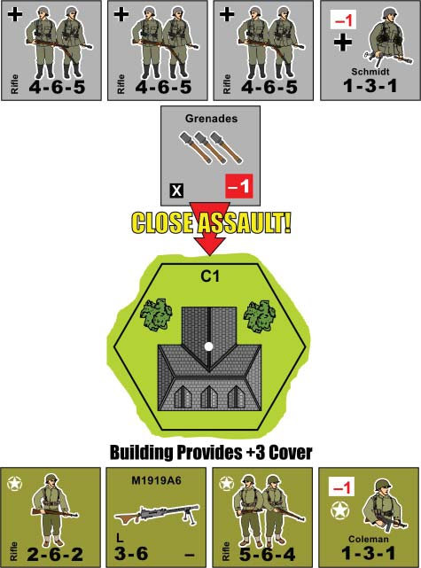

15. Close Assaults¶
15.1 General¶
Close assaults may be conducted by infantry units against an adjacent, enemy occupied hex. Close assaults occur during the Advance and Assault Phase, and may only be performed by infantry units that did not advance. A unit may conduct a close assault even if marked with a Move or Fire marker. Close assaults may be conducted against any type of unit. A close assault affects all units in the target hex, and all units in the target hex defend against the assault. Only infantry units from the same hex may close assault together; they may not combine with infantry units from separate hexes. A player does not have to assault with all of his units; he may assault with as many, or as few, as he feels necessary, but only one close assault may be conducted from a hex each turn. Any number of close assaults may be conducted against the same hex during the same turn, but each close assault must be resolved separately, and from a separate assault group.
15.2 Support Weapon Restrictions¶
Assaulting units may only use Light (L) machine guns, grenades, and satchel charges. Defending infantry units may use any support weapon, within normal support weapon or close assault restrictions.
15.3 Close Assault Leadership Modifiers¶
The assaulting player may subtract a leader's Leadership Modifier from his assault dice roll, even if the leader was used to modify an attack earlier in the same turn. The defending player may subtract a Leadership Modifier from the Kill Number before the assault is resolved, even if the leader was used to modify an attack earlier in the same turn. Each side may only use one Leadership Modifier per close assault resolution.
15.4 Defending AFV, Vehicle and Passenger Restrictions¶
A defending AFV or vehicle may only use APFP from machine guns; the APFP of a main Gun may not be used when defending a close assault. An AFV or vehicle carrying passengers always adds the infantry unit(s) APFP rating(s) to its total, including any Light (L) machine guns, grenades, and satchel charges the player wishes to use.
15.5 Defending Gun and Unarmed Vehicle APFP Ratings¶
Guns and unarmed vehicles (i.e. vehicles without machine guns) have an APFP of 2 when defending against a close assault. A Gun being transported may never contribute to a defending group's APFP total.
15.6 Close Assault Procedure¶
The assaulting player declares which units are conducting a close assault, and the target hex of the assault. The assaulting player totals the APFP ratings of the assaulting units, and compares it to the APFP total for the defending unit(s) to obtain an odds ratio. All fractions are rounded down.
For example, if the attacking player's APFP rating is 14 to the defender's 6, the odds are two to one (2-1). If the odds were reversed, with an attacking APFP of 6 versus the defender's 14, the ratio would be one to two (1-2).
The assaulting player consults the Close Assault Table, and the number listed below the odds ratio is the Kill Number. Odds greater than four to one (4-1) are resolved at 4-1, and odds lower than one to four (1-4) are resolved at 1-4.
15.7 Resolution¶
The assaulting player makes a dice roll and adds any applicable modifiers. Cover modifiers do not apply to close assaults. If the modified dice roll is equal to or less than the Kill Number the defending units are eliminated.
15.8 Taking Ground and Taking Casualties¶
| Outcome | Assaulter CPs | Defender CPs |
|---|---|---|
| Assault succeeds | Cover modifier + 1 CP per defending unit | (eliminated) |
| Assault fails | Assault roll difference + Cover modifier + 1 CP per defending unit | 1 CP per assaulting unit |
If the defending units are eliminated, the assaulting units immediately occupy the vacant hex (Exception: A full stack may assault a Bunker, but only two units may occupy the location; see 20.3 and 20.5), but suffer Casualty Points equal to the cover modifier of the hex assaulted (including any hexside terrain crossed, such as a wall or hedge), plus one Casualty Point for each defending unit (Exception: See 15.9 Assaulting Pinned Units, below). Casualty Points are applied in the same manner as described in 14.61.
If the assaulting unit(s) fail to eliminate the defending units (the dice roll was higher than the Kill Number), the assaulting unit(s) suffer a number of Casualty Points equal to the number by which the assault dice roll failed, plus the cover modifier of the hex assaulted, plus one for each defending unit. Defending units also suffer one Casualty Point for each assaulting unit, even though the assault failed.
For example, if three squads conduct an assault into a woods hex (+2 cover modifier) against two squads, and the odds are 2-1, the assaulting player must roll an 8 or less to eliminate the enemy units, but the assaulting units would automatically suffer two Casualty Points for the cover modifier of the woods hex, and two more Casualty Points for the two defending squads. If the assaulting player rolls a 10 the assault fails, and two (10-8=2) Casualty Points are applied to the assaulting units for the failed attempt, plus two more for the woods hex, plus two for the defending squads for a total of six Casualty Points. The defending player would suffer three Casualty Points for the three assaulting squads.
15.81 Hill Assaults and Casualty Points¶
Units assaulting into a hill hex from a lower elevation suffer +1 additional Casualty Point per uphill level traversed for the assault.
15.9 Assaulting Pinned Units¶
Pinned units are automatically eliminated when close assaulted, and are immediately removed before the odds are calculated against any unpinned units remaining in the target hex. Pinned units have no effect on assaulting units (i.e. they do not contribute to casualties versus assaulting units). If a target hex contains only pinned units, the pinned units are eliminated and removed, and the assaulting units automatically take the target hex; no assault dice roll is necessary, and the assaulting units suffer no casualties as a result of the assault.
15.10 Failed Assaults Versus AFVs¶
An AFV defending against a failed assault may be immobilized by the attack. Casualty Points from a failed assault are applied to the AFV, with the defending player making an immobilization die roll. If the roll is equal to or less than the Casualty Points inflicted the AFV is immobilized, and marked with an Immobile marker. If the roll is greater than the Casualty Points there is no effect. A maximum of three (3) Casualty Points may be applied in this manner (with three Casualty Points resulting in immobilization, no die roll necessary), with any additional Casualty Points applied to other units occupying the hex (if present). If the AFV is carrying passengers, the Casualty Points may be applied to the passengers as Collateral Damage (see 14.65 Collateral Damage to Passengers). Passengers may not be pinned to fulfill Casualty Points; they may only be reduced or eliminated (for their full Casualty Rating). Any remaining Casualty Points, after eliminating passengers, must be applied to the AFV in the form of an immobilization roll.
Close Assault Example¶

A German platoon close assaults a group of Americans in a building hex. The German player has an APFP of 13, and decides to use a Grenade counter, which modifies his dice roll by -1. The American player has an APFP of 11. When the APFP totals are compared (13-11), the odds are 1-1. The Kill Number for 1-1 odds is 6 or less, modified to 5 or less by the American leader, Coleman. The German player rolls two dice for a result of 7, -1 for the leader, Schmidt, and -1 for the Grenades, for a total of 5. The American units are eliminated. The German units move into the building hex, but suffer six Casualty Points; three for the building hex, and three for the defending units. The German player eliminates one squad, and pins another to cover the six Casualty Points.